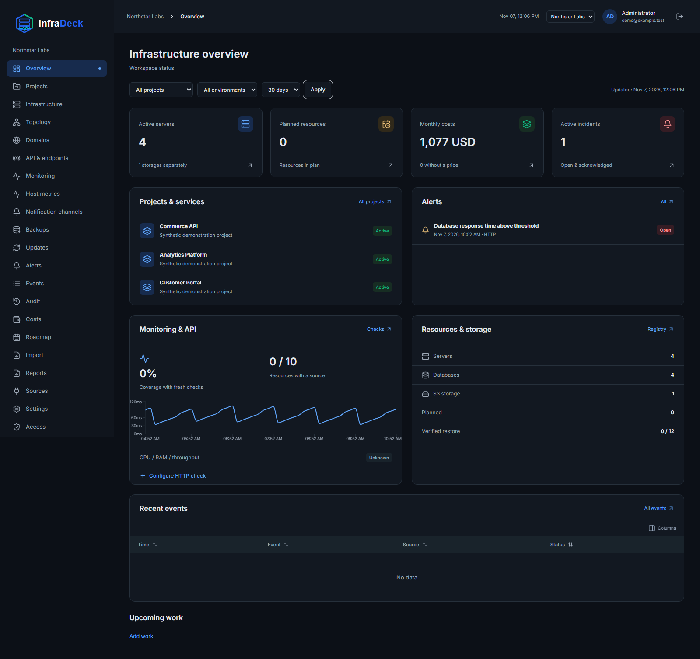

⌘
01Infrastructure with context
Group servers, services, databases and domains into projects. Record dependencies and owners so you know what each service relies on.

 BETA
Get started
BETA
Get started
Servers, services, dependencies and costs in one place. Know what runs, how it connects and what it costs.

Explore projects, servers, dependencies and costs using a fictional infrastructure example before deploying your own instance.
View the application screenshotA link to a demo with synthetic data will appear here. The demo is not deployed yet.
The link will be available once the demo is live.When inventory lives in a spreadsheet, metrics in another tool and dependencies in someone's head, finding answers takes time. InfraDeck brings the context together.
Group servers, services, databases and domains into projects. Record dependencies and owners so you know what each service relies on.
HTTP/HTTPS checks, TLS expiry and connected Prometheus metrics. Observation history helps explain changes.
Track resource costs and project budgets. Show where the money goes with PDF and XLSX reports.
Roles, project permissions, audit history, work plans and backup records. Keep operational knowledge alongside the infrastructure.
Run InfraDeck on your servers. You decide where data is stored, who has access and which sources are connected.
View installation stepsNo vendor cloud is required. Deploy the platform with Docker Compose.
Licensed under AGPL-3.0-only. Inspect the code, adapt the platform and contribute under the license terms.
Configure external sources and channels explicitly. Start with inventory before connecting integrations.
You do not need to document everything again. Import your inventory, add relationships and connect monitoring gradually.
Build from source with Docker Compose. Create a workspace and its owner.
Import XLSX or CSV with preview and field mapping. Organize resources into projects.
Configure authorized check targets, metric sources and notification channels.
A working platform: from inventory and reports to server metrics and recovery verified on a test environment.
0.5.0 Beta 1 · source buildSSH connectivity, CPU/RAM/load and root disk usage. Key rotation is experimental and disabled by default.
Sentinel verified: real CPU/RAM readings and historyExperimental: automatic S3 execution and restore are disabled by default. Enable only for authorized test targets.
Verified round trip: archive → MinIO → separate PostgreSQLThe first source-build beta is available. English is the default; Russian is selectable. External SSH/S3 and provider acceptance is ongoing; use authorized test targets. The S3 executor is limited to 16 MiB and 1000 files. Registry images, firewall management and managed updates are not included.
Verified 0.5.0 workflows using local images and isolated test environments.
Docker Compose starts the platform. Owner creation, sign-in and setup closure have been verified.
The worker generates real PDFs. Both worker and dedicated runner heartbeats are verified.
Sentinel provides real CPU/RAM readings and history from a connected server; 120 points per metric were verified over one hour.
A test archive was uploaded through MinIO and restored into separate PostgreSQL. File hashes and table data matched.
Also passed: 15 clean migrations, 26 database/domain tests and 7 end-to-end workflows. These validate the source-build beta, not every external environment or a load guarantee.
What is available, what is undergoing acceptance and what comes next. Status as of . Dates for future milestones have not been announced.
Projects and resources, dependencies, owners, costs, XLSX/CSV import, PDF/XLSX reports, roles and audit history.
Project permissions and budgets, Prometheus, TLS checks, Alertmanager, email, Telegram and Discord.
SSH connectivity, host-key verification, confirmed Sentinel installation and a dedicated runner. Staged key rotation remains experimental.
A bounded encrypted executor: manual and scheduled runs, retries, cancellation, retention and isolated restore. Disabled by default.
Local images passed clean installation, owner creation, sign-in, PDF and service heartbeat checks. Isolated tests verified migrations and metadata recovery with the encryption key.
Firewall changes with a preview, confirmation and automatic rollback first. Separately approved restarts and updates follow later.
Full EN/RU guides, recovery and retention, load/security validation and prebuilt release images without Node.js on the host.
This roadmap describes the current plan, not a schedule commitment. Implemented code does not mean acceptance on a working installation. Provider APIs and product-specific backup connectors remain separate backlog items.
Administrators, DevOps teams and IT leaders who need shared resource, dependency and cost inventory with service monitoring.
Start with inventory and connect your existing Prometheus and Alertmanager. Built-in checks cover HTTP/HTTPS availability. Configure and verify each external source in your environment.
Yes. InfraDeck runs on your servers without a vendor cloud. Building requires dependencies and container images; external integrations use the services you configure.
Deploy the source-build beta on your test environment, create a workspace, manage inventory, import data and generate reports. Compose startup, owner sign-in and PDF generation are verified. Verify SSH and external integrations in your environment; S3 execution remains experimental and disabled by default. This is a beta, not a production-readiness guarantee.
The source is licensed under AGPL-3.0-only. Follow its terms when modifying or distributing the software, including serving a modified version over a network. See the project's LICENSE file.
Start with a test deployment of InfraDeck.
Your servers. Your data. Your point of control.
Run in the source directory:
sh install.shhttp://localhost:3000/setup.BOOTSTRAP_TOKEN from your local .env and create the owner..env private.Help with installing, configuring and operating InfraDeck, from the first deployment to day-to-day use. Scope and terms are agreed for your needs.
Help deploying on your servers, completing initial setup and preparing your workspace.
Help with inventory imports, projects, access, metric sources and notification channels.
Advice, troubleshooting and help maintaining and updating your installation.
Tell us where you plan to deploy, which sources you want to connect and how we can help.
Leave a way to contact you. Do not send passwords, tokens or server credentials.